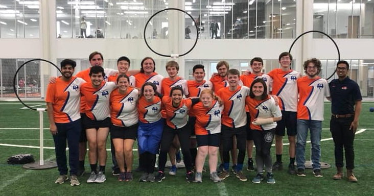
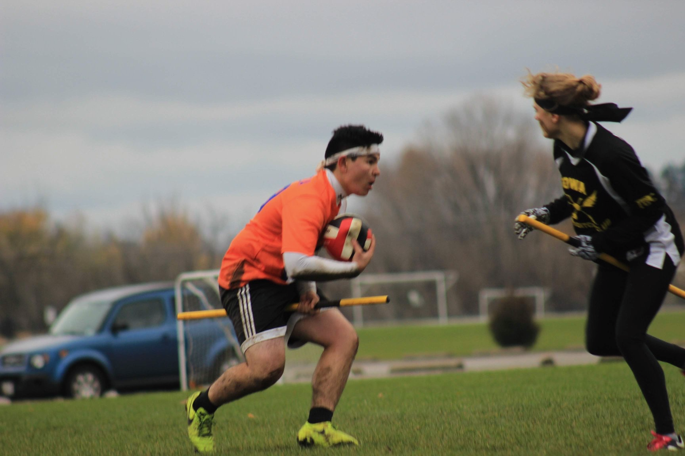

Activities
Falling Illini Skydiving Club
I made my first skydive on July 7, 2017 and fell in love with it immediately. By August 2017 I had earned my skydiving license and try to go skydiving whenever I can. I currently serve as the Vice President for the Falling Illini Skydiving Club.
If you are a student at the Univeristy of Illinois and want to try skydiving, check out the Falling Illini Skydiving Club on Facebook by clicking HERE
Not a student, but still want to jump out of an airplane? Check out our sponsoring drop zone Champaign Urbana Skydiving Club by clicking HERE
Illini Ridgebacks Quidditch Team
 I started playing quidditch as a way to stay active, but quickly made my way onto the school team and now travel across the country playing against other colleges. Since joining, the Ridgebacks have qualified for the National Championships twice. My primary position is chaser, but I have also played as a seeker.
For updates on the Ridgebacks, check out their Facebook page HERE
Want to learn how to play? Read up on general gameplay HERE